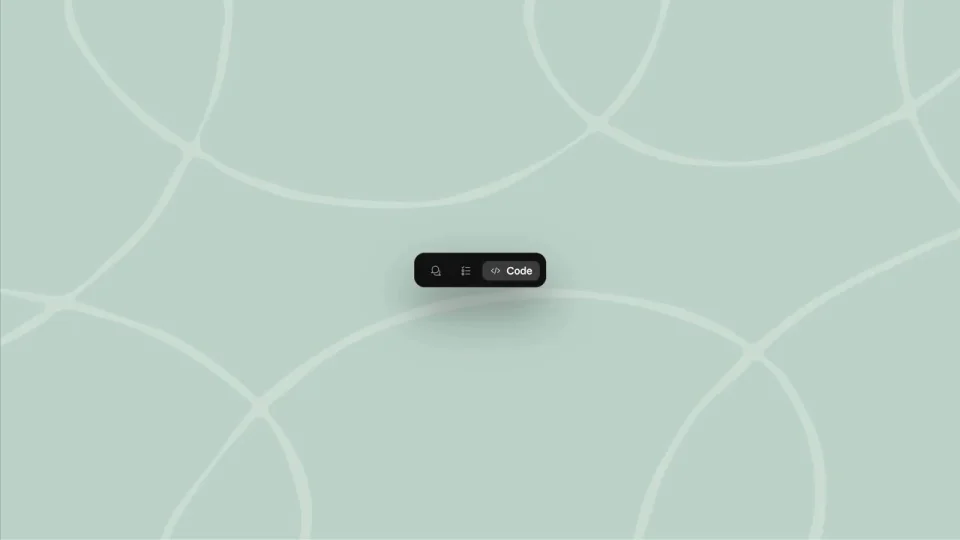
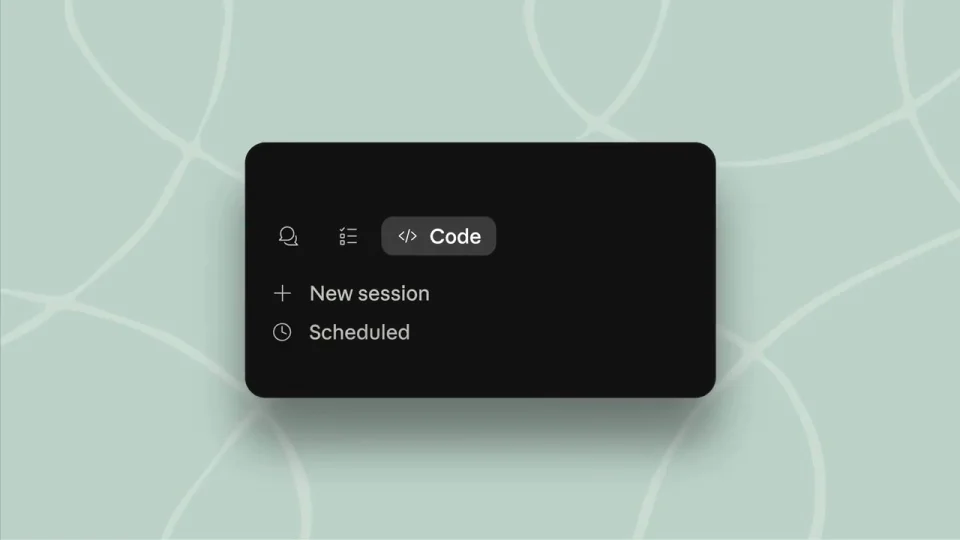
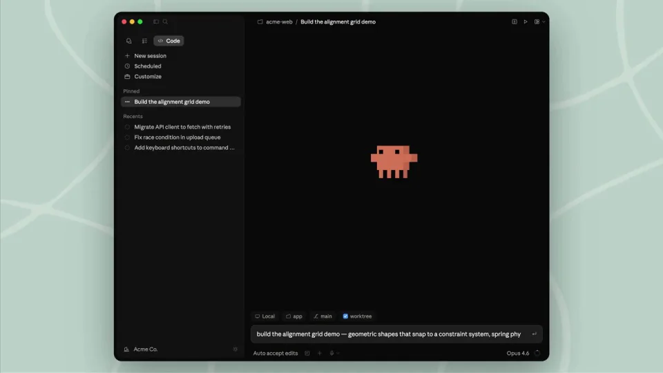
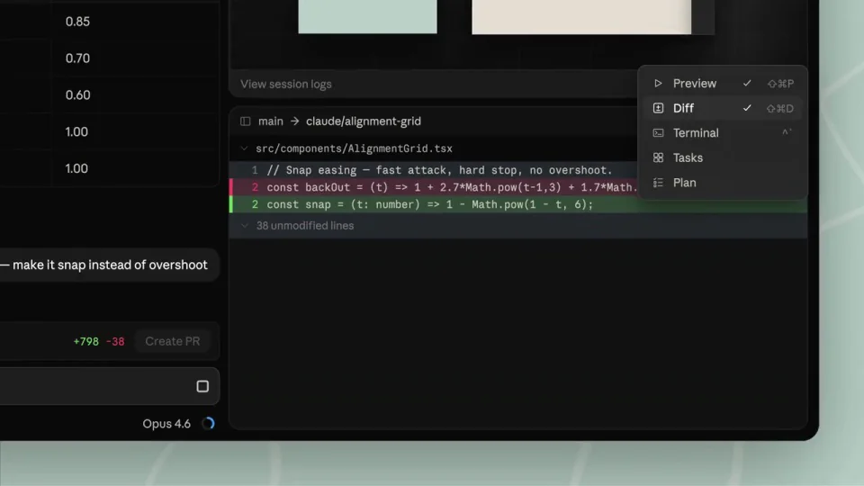
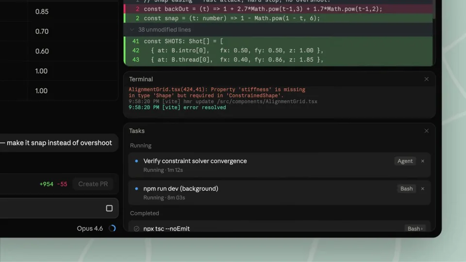
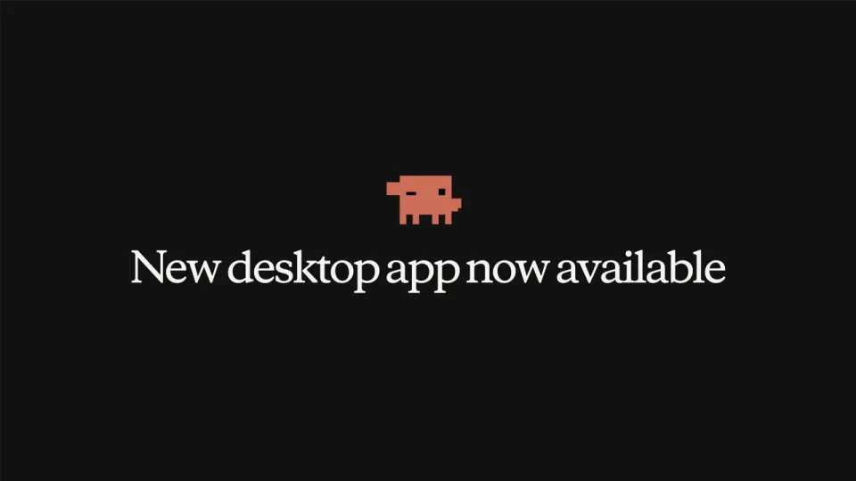

Anthropic / V242
Claude Code｜桌面多会话
用工作区的展开说明多任务能力：先完成一个请求，再展示预览、修改和并行会话。
构图与编排 可播放 · 可替换内容
整体编排规则示例
查看 HTML 源码
<!doctype html><html lang="zh-CN"><meta charset="utf-8"><meta name="viewport" content="width=device-width,initial-scale=1"><title>Claude Code｜桌面多会话 · sequence</title><style>html,body{margin:0;width:100%;height:100%;overflow:hidden;background:#b8cec6}canvas{display:block;width:100%;height:100%;object-fit:contain}</style><body data-mode="sequence"><canvas width="1000" height="600"></canvas><script src="data.js"></script><script src="common.js"></script><script src="scene.js"></script><script src="bridge.js"></script></body></html>画面元素主工作区侧边会话栏预览面板代码差异终端指针
MOTION LANGUAGE
动作与构图
局部动作 · 构图规则
01
先建立一个清晰的工作区

薄荷色留白包围深色主窗口。侧栏固定在左，当前任务占据中间；代码用等宽字，收尾产品名可切换为衬线字。
窗口展开时保持中心位置，等界面稳定后再输入请求。
02
让结果和修改留在同一窗口
让结果和修改留在同一窗口规则示例
查看 HTML 源码
<!doctype html><html lang="zh-CN"><meta charset="utf-8"><meta name="viewport" content="width=device-width,initial-scale=1"><title>Claude Code｜桌面多会话 · sequence</title><style>html,body{margin:0;width:100%;height:100%;overflow:hidden;background:#b8cec6}canvas{display:block;width:100%;height:100%;object-fit:contain}</style><body data-mode="clip" data-start="10" data-end="23"><canvas width="1000" height="600"></canvas><script src="data.js"></script><script src="common.js"></script><script src="scene.js"></script><script src="bridge.js"></script></body></html>预览从右侧展开，代码仍留在左侧。切换到差异和终端时沿用同一外框，避免观众重新寻找任务。
预览展示产物，差异展示改动，终端展示执行状态；三种信息使用不同的内部排版。
03
拉远后再展示多会话
把完整工作窗口缩为多个并排实例，让并行能力成为最后一次信息扩展。每个会话拥有独立内容，但共享窗口样式。
04
改成其他工具时
可换品牌、任务和预览内容。保留请求、产物与修改之间的对应；设计工具可用画板预览和局部改稿替代代码差异。
SEQUENCE
段落与节奏
点击段落，定位到上方编排示意。





画面参考 · 离散静帧
KEEP THE RELATIONSHIPS
制作其他主题
- 迁移成设计工具时保留请求→结果预览→修改证据的关系。
- 可换代码和预览内容，不能把内部变化全变成窗口平移。
制作约束
主工作区 / 侧边会话栏 / 预览面板 / 代码差异 / 终端 / 指针
- 主窗口先展开，随后从单列长成预览与代码并列；面板是同一工作区子层。
- 切换 Preview、Diff、Terminal 展示不同信息，窗口位置保持连续。
- 最后拉远显示多会话，再切黑色落版。